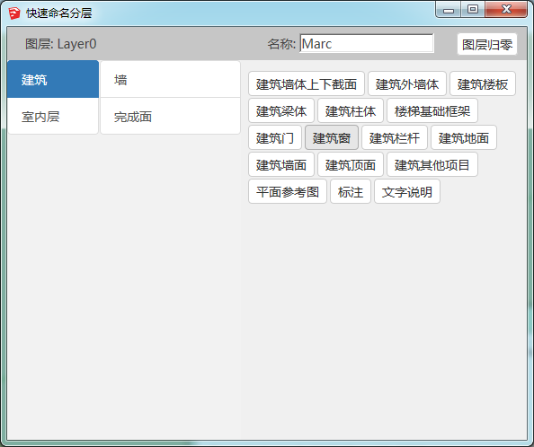
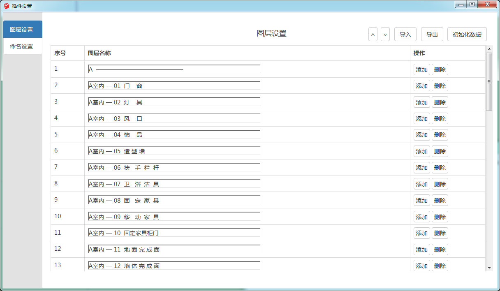
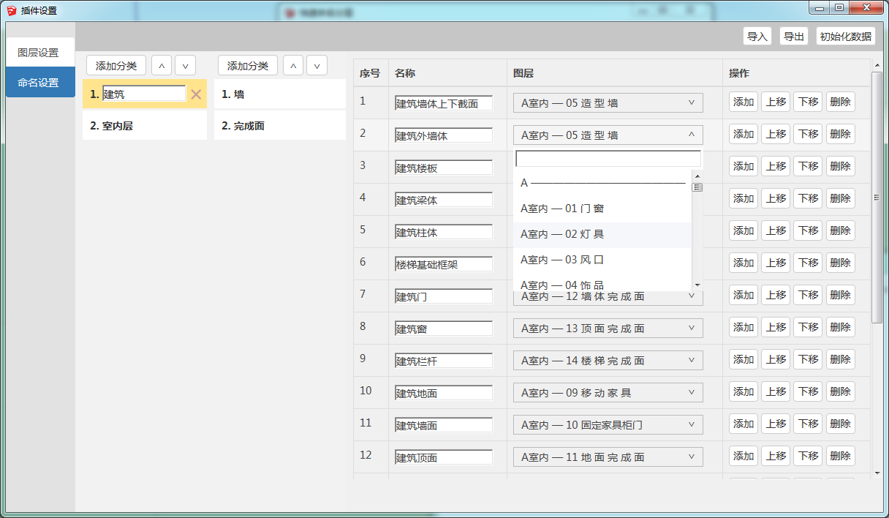

开发怎样的插件
在这里，会演示如何开发一个用来对选中对象进行快速命名并设置图层的插件。该插件有两个按钮，分别可以呼出使用界面和设置界面，使用界面采用了两级目录的形式来检索名称，设置界面则包含了两个页面，分别用来设置图层和设置名称与图层的绑定。三个页面的效果如下：
  
插件的源码地址是shink_quick_naming，大家可以直接查看最后的成品源码，也可以根据教程按照顺序浏览每一次的提交记录，对于了解一个插件的开发流程会有所帮助。由于本插件的前端页面是需要生成的，因此源码无法直接作为插件使用，无论是在本地测试还是打包前都需要先生成最新的前端页面，这一点还请注意。